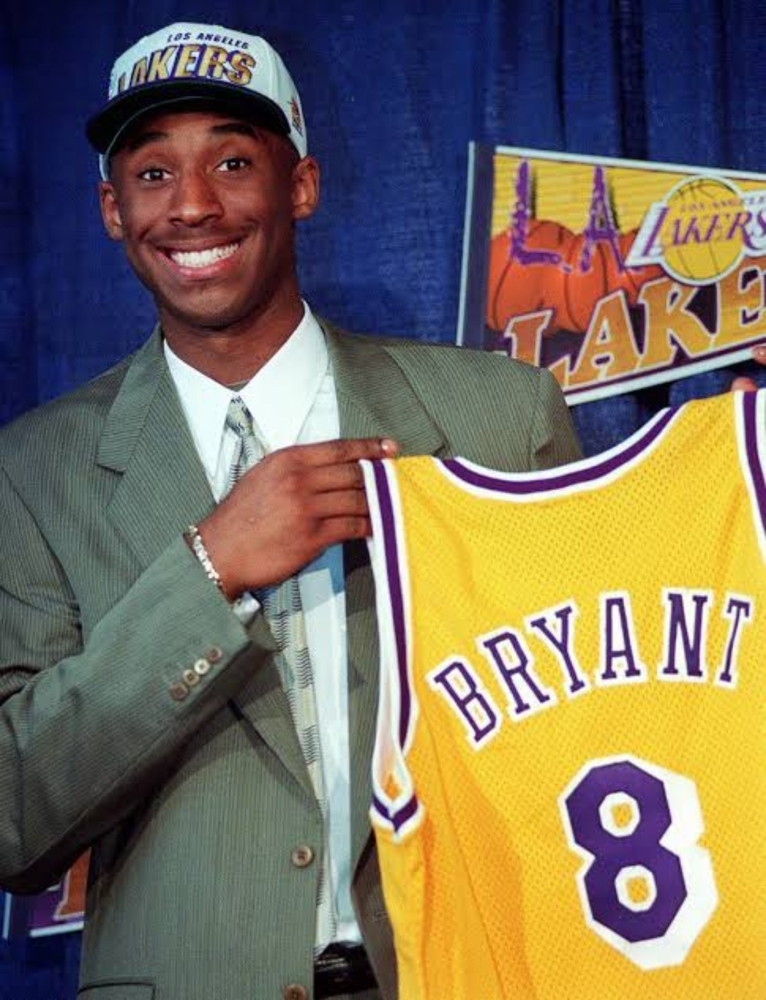
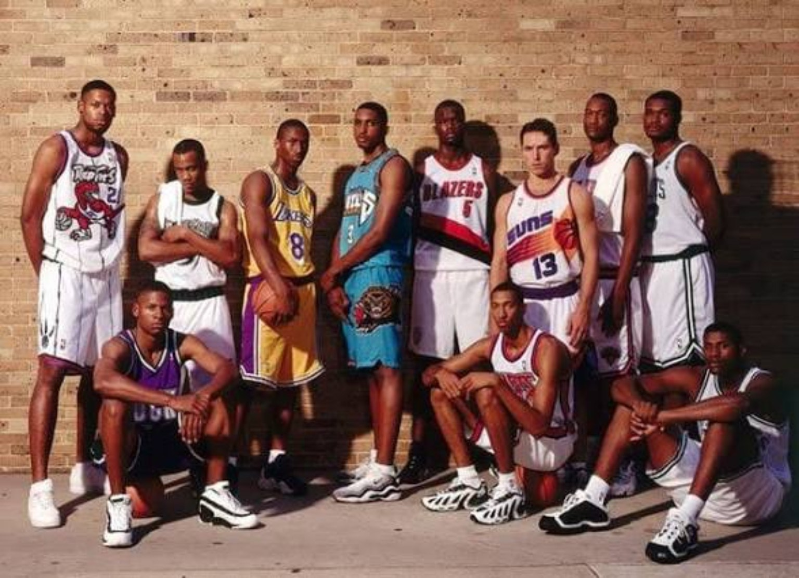

01. BEFORE HISTORY REARRANGED THE BOARD.
On June 26, 1996, Allen Iverson was the obvious headline. Philadelphia took the Georgetown star No. 1 overall, and he immediately looked like the face of a new NBA generation. Marcus Camby went second. Shareef Abdur-Rahim third. Stephon Marbury fourth. Ray Allen fifth. Antoine Walker sixth.
Then the draft kept going. Kerry Kittles. Samaki Walker. Erick Dampier. Todd Fuller. Vitaly Potapenko. By the time Charlotte came on the clock at No. 13, twelve players had already heard their names.
The teenager from Lower Merion was still there.

02. JERRY WEST SAW IT BEFORE EVERYBODY ELSE.
Kobe was part of the prep-to-pro wave that Kevin Garnett had helped reopen a year earlier, but he was a different type of gamble. Garnett was a 6-foot-11 forward. Kobe was a high-school guard asking NBA teams to project what he might become against grown men.
Jerry West did not need the same convincing. After watching Kobe work out against former Defensive Player of the Year Michael Cooper, West became determined to get him to Los Angeles. The Lakers reached an agreement with Charlotte: if Kobe was still available at No. 13, the Hornets would select him and send his rights to Los Angeles for veteran center Vlade Divac.
NO. 13 → LOS ANGELES.
Charlotte selected Kobe Bryant. Los Angeles sent Vlade Divac to the Hornets. The Lakers came out of draft night with the teenager West believed could become a star — then added Shaquille O’Neal in free agency that same summer.
It is hard to find a cleaner franchise pivot in NBA history. One summer turned the Lakers from a good mid-1990s team into an organization built around two future all-time greats. The championships did not arrive immediately, but the foundation of the next dynasty was already in place.
03. THIS CLASS WAS RIDICULOUS.
Kobe became the greatest player from the class, but the argument for 1996 as one of the deepest drafts ever goes way beyond him. The draft produced 10 All-Stars: Shareef Abdur-Rahim, Ray Allen, Kobe Bryant, Zydrunas Ilgauskas, Allen Iverson, Stephon Marbury, Steve Nash, Jermaine O’Neal, Peja Stojaković and Antoine Walker.
Four drafted players — Iverson, Allen, Bryant and Nash — eventually reached the Naismith Memorial Basketball Hall of Fame. Iverson won the 2001 MVP. Nash won back-to-back MVPs in 2005 and 2006. Kobe won in 2008. Between the three of them, the class collected four MVP trophies and helped define what NBA stardom looked like after Michael Jordan’s era.
The late value was crazy too. Nash went 15th. Jermaine O’Neal went 17th straight out of high school. Ilgauskas went 20th. Derek Fisher — Kobe’s future five-time championship teammate — went 24th.

04. THE CLASS CHANGED THE CULTURE TOO.
The numbers alone do not explain why this draft still feels different. Iverson became a cultural force who changed how a generation dressed, moved and expressed itself. Kobe became the league’s obsession with work ethic, footwork and competitive mythology. Nash helped redefine modern offense. Ray Allen became one of the defining shooters of his era and later hit one of the biggest shots in Finals history.
Marbury became a New York icon and then a basketball legend in China. Peja was a prototype for the oversized movement shooter. Jermaine O’Neal grew from a project into an MVP-level big in Indiana. Camby became a Defensive Player of the Year. Even the careers that never reached MVP territory added something distinctive to the league.
That is what makes 1996 feel bigger than a list of names. It gave the NBA multiple versions of what the future could look like at the same time.
05. THE 4DK RE-DRAFT.
Thirty years of hindsight changes the order completely. For this re-draft, 4DK is weighing peak, longevity, winning, individual awards and cultural impact. We are also allowing every draft-eligible 1996 prospect into the pool — which means the undrafted Ben Wallace gets his rightful spot.
Just outside: Antoine Walker, Zydrunas Ilgauskas and Derek Fisher. Different criteria can move the middle of this list around, but No. 1 is not a debate here.
06. KOBE AT 13 STILL LOOKS IMPOSSIBLE.
Draft history always looks cleaner after the fact. Teams in 1996 were not passing on a five-time champion with 33,643 career points. They were evaluating a 17-year-old guard who had never played a college game at a time when high-school players were still treated as high-risk bets.
That context matters. So does the result.
Kobe played 20 seasons, all with the Lakers. He won five championships, an MVP, two Finals MVPs, two scoring titles and became one of the defining players in league history. Basketball-Reference lists him as the 1996 class leader in career win shares. The player taken 13th became the player every re-draft starts with.
07. THIRTY YEARS LATER.
The 1984 class will always have Jordan, Hakeem, Barkley and Stockton. The 2003 class has LeBron, Wade, Carmelo and Bosh. But 1996 belongs in that room because of its combination of peak talent, depth and cultural influence.
For The Mamba Files, this draft is the perfect second chapter. File 001 showed what Kobe eventually became at his scoring apex. File 002 goes all the way back to the night before any of that existed — before the rings, before 81, before Mamba Mentality became a phrase.
Just a teenager in a suit, a Lakers cap, and a front office willing to bet on what nobody else could fully see yet.
SOURCES / RECORD
Draft order, career totals and All-Star count: Basketball-Reference. Historical context on Kobe’s draft-night trade and Jerry West’s evaluation: NBA.com. Hall of Fame count and the class’s 61 combined All-Star appearances: NBA TV / NBA.com retrospective.
Basketball-Reference — 1996 Draft • NBA — 1996 Draft, 30 Years Later • NBA — Ready or Not: The ’96 Draft